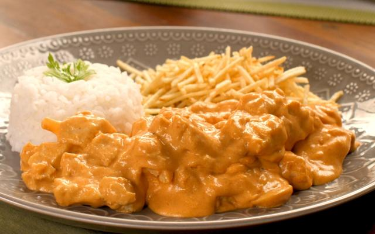

Strogonoff
Home

Description:
It's a dish that I really like, that's what I have to say.
Ingredients
- 3 Diced chicken breasts
- 1 clove of chopped garlic
- salt to taste
- black pepper to taste
- 1 chopped onion
- 2 Tablespoons (soup) of mayonnaise
- 1 Tbsp butter
- 1/2 cup ketchup
- 1/3 cup mustard
- 1 Cup mushrooms
- 1 Cup cream
- potato straw to taste
Steps:
- In a saucepan, mix the chicken, garlic, mayonnaise, salt and pepper.
- In a large frying pan, melt the butter and brown the onion.
- Add the seasoned chicken until golden.
- Add the mushrooms, ketchup and mustard.
- Incorporate the cream and remove from the fire before boiling.
- Serve with white rice and straw potatoes.
Other recipes:
- Pizza
- Feijoada